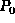
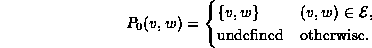
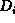
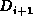

Data Structures and Algorithms
with Object-Oriented Design Patterns in Java
Data Structures and Algorithms
with Object-Oriented Design Patterns in Java
Floyd's algorithm uses the
dynamic programming method
to solve the all-pairs shortest-path problem on a dense graph.
The method makes efficient use of
an adjacency matrix to solve the problem.
Consider an edge-weighted graph  ,
where C(v,w) represents the weight on edge (v,w).
Suppose the vertices are numbered from 1 to
,
where C(v,w) represents the weight on edge (v,w).
Suppose the vertices are numbered from 1 to  .
That is, let .
Furthermore,
let be the set comprised of the first k vertices in
.
That is, let .
Furthermore,
let be the set comprised of the first k vertices in  .
That is, , for .
.
That is, , for .
Let be the shortest path from vertex v to w that passes only through vertices in , if such a path exists. That is, the path has the form
Let be the length of path :
Since , the  paths are correspond to the edges of G:

Therefore, the path lengths correspond to the weights on the edges of G:
Floyd's algorithm computes the sequence of matrices
.
The distances in  represent paths with intermediate vertices in .
Since ,
we can obtain the distances in  from those in
by considering only the paths that pass through vertex  .
Figure
.
Figure  illustrates how this is done.
illustrates how this is done.
Figure: Calculating in Floyd's algorithm.
For every pair of vertices (v,w),
we compare the distance ,
(which represents the shortest path from v to w
that does not pass through  )
with the sum
)
with the sum  (which represents the shortest path from v to w
that does pass through
(which represents the shortest path from v to w
that does pass through  ).
Thus, is computed as follows:
).
Thus, is computed as follows:
 Copyright © 1998 by Bruno R. Preiss, P.Eng. All rights reserved.
Copyright © 1998 by Bruno R. Preiss, P.Eng. All rights reserved.